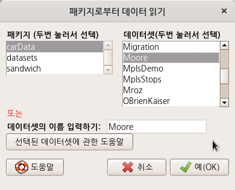
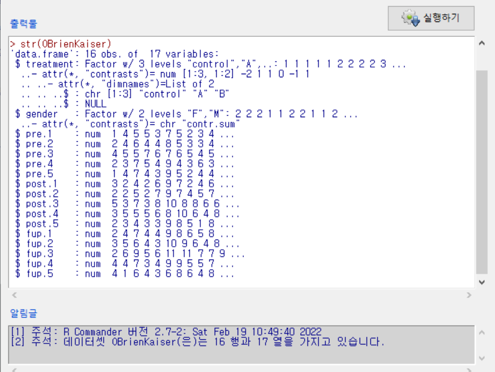

2 . 데이터셋 / datasets
2.1 Prestige - carData > Prestige


data(Prestige, package="carData")
help("Prestige")carData 패키지에 있는 Prestige 데이터셋을 .csv로 저장하여 내보낼 수 있다.
참조: 활성 데이터셋 내보내기…
2.2 Moore - carData > Moore


data(Moore, package="carData")
help("Moore")상기 명령 실행을 통해서 Moore 데이터셋에 대한 상세 정보를 얻을 수 있다.
| Moore {carData} | R Documentation |
Status, Authoritarianism, and Conformity
Description
The Moore data frame has 45 rows and 4 columns.
The data are for subjects in a social-psychological experiment,
who were faced with manipulated disagreement from a partner of either
of low or high status. The subjects could either conform to the
partner’s judgment or stick with their own judgment.
Usage
Moore
Format
This data frame contains the following columns:
- partner.status
-
Partner’s status. A factor with levels:
high,low. - conformity
-
Number of conforming responses in 40 critical trials.
- fcategory
-
F-Scale Categorized. A factor with levels (note levels out of order):
high,low,medium. - fscore
-
Authoritarianism: F-Scale score.
Source
Moore, J. C., Jr. and Krupat, E. (1971) Relationship between source status, authoritarianism and conformity in a social setting. Sociometry 34, 122–134.
Personal communication from J. Moore, Department of Sociology, York University.
References
Fox, J. (2016) Applied Regression Analysis and Generalized Linear Models, Third Edition. Sage.
Fox, J. and Weisberg, S. (2019) An R Companion to Applied Regression, Third Edition, Sage.
2.3 OBrienKaiser - carData > OBrienKaiser
carData 패키지에 있는 OBrienKaiser 데이터셋이다. carData 패키지는 Rcmdr 패키지가 호출될 때 자동으로 함께 호출되기 때문에 R Commander에서 carData 패키지에 포함된 데이터셋들을 자유롭게 호출할 수 있다.
Read data set from an attached package…
OBrienKaiser 데이터셋은 R Commander에서 활성 데이터셋으로 이용할 수 있다. 그러나 ‘통계 > 요약 > 활성데이터셋’ 기능은 사용할 수 없다. 다음과 같은 오류문을 Rgui 창에서 보게된다.
Error in sprintf(gettextRcmdr(“There are %d variables in the data set %s.you want to proceed?”), : ’%d’는 유효하지 않은 포맷입니다; 문자형 객체들에는 포맷 %s를 사용해주세요
입력창에 str(OBrienKaiser) 함수를 입력하고 실행하여 OBrienKaiser 데이터셋의 구조를 살펴보자.

입력창에 summary(OBrienKaiser) 함수를 입력하고 실행하여 요약 정보를 살펴보자.

| OBrienKaiser {carData} | R Documentation |
O’Brien and Kaiser’s Repeated-Measures Data
Description
These contrived repeated-measures data are taken from O’Brien and Kaiser (1985). The data are from an imaginary study in which 16 female and male subjects, who are divided into three treatments, are measured at a pretest, postest, and a follow-up session; during each session, they are measured at five occasions at intervals of one hour. The design, therefore, has two between-subject and two within-subject factors.
The contrasts for the treatment factor are set to -2, 1, 1 and
0, -1, 1. The contrasts for the gender factor are set to
contr.sum.
Usage
OBrienKaiserFormat
A data frame with 16 observations on the following 17 variables.
-
treatment -
a factor with levels
controlAB -
gender -
a factor with levels
FM -
pre.1 -
pretest, hour 1
-
pre.2 -
pretest, hour 2
-
pre.3 -
pretest, hour 3
-
pre.4 -
pretest, hour 4
-
pre.5 -
pretest, hour 5
-
post.1 -
posttest, hour 1
-
post.2 -
posttest, hour 2
-
post.3 -
posttest, hour 3
-
post.4 -
posttest, hour 4
-
post.5 -
posttest, hour 5
-
fup.1 -
follow-up, hour 1
-
fup.2 -
follow-up, hour 2
-
fup.3 -
follow-up, hour 3
-
fup.4 -
follow-up, hour 4
-
fup.5 -
follow-up, hour 5
Source
O’Brien, R. G., and Kaiser, M. K. (1985) MANOVA method for analyzing repeated measures designs: An extensive primer. Psychological Bulletin 97, 316–333, Table 7.
Examples
OBrienKaiser
contrasts(OBrienKaiser$treatment)
contrasts(OBrienKaiser$gender)